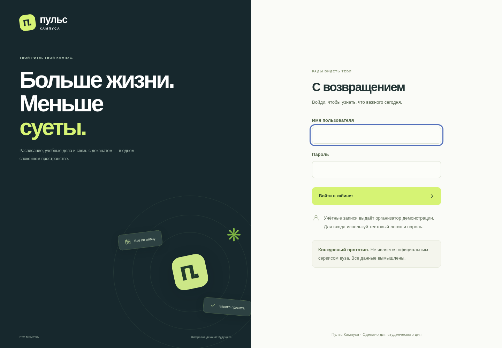
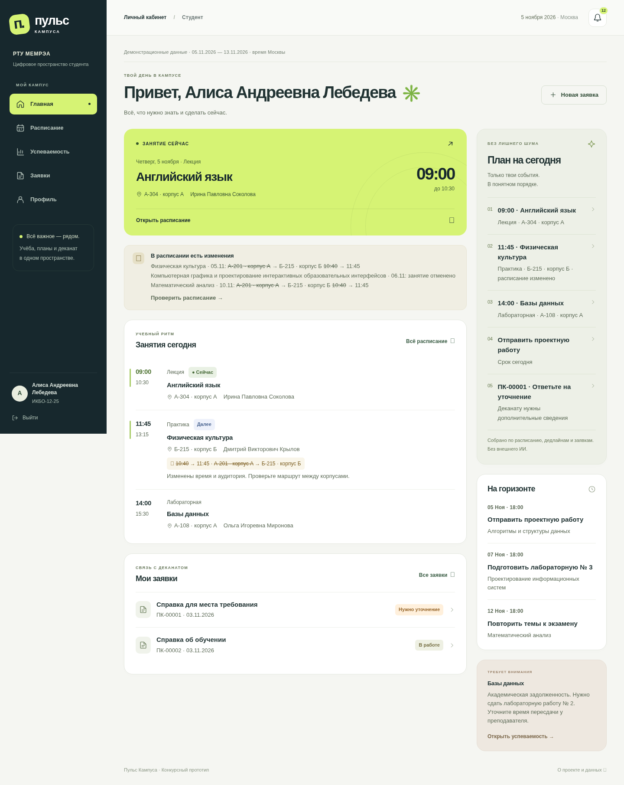
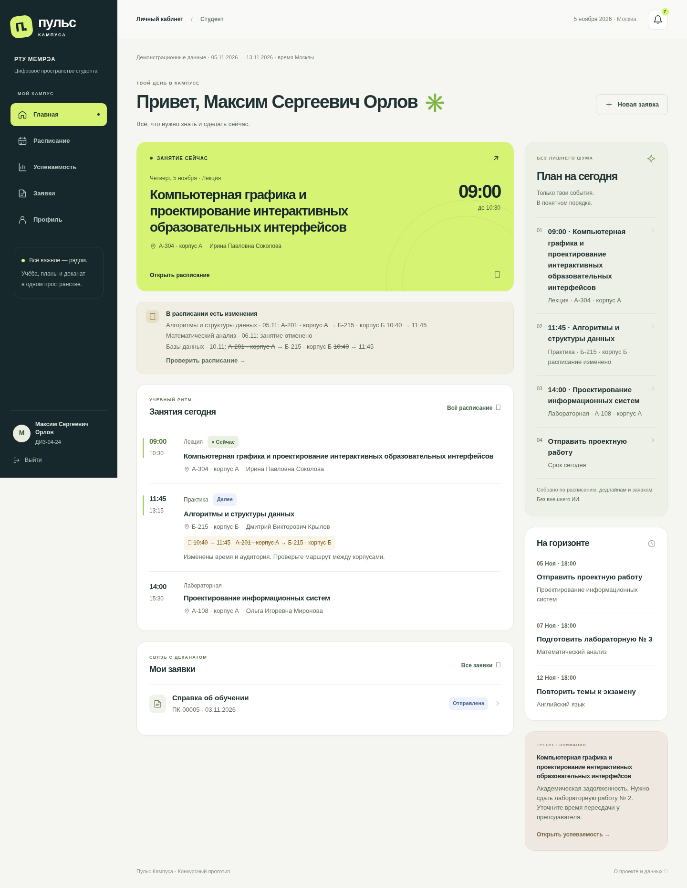
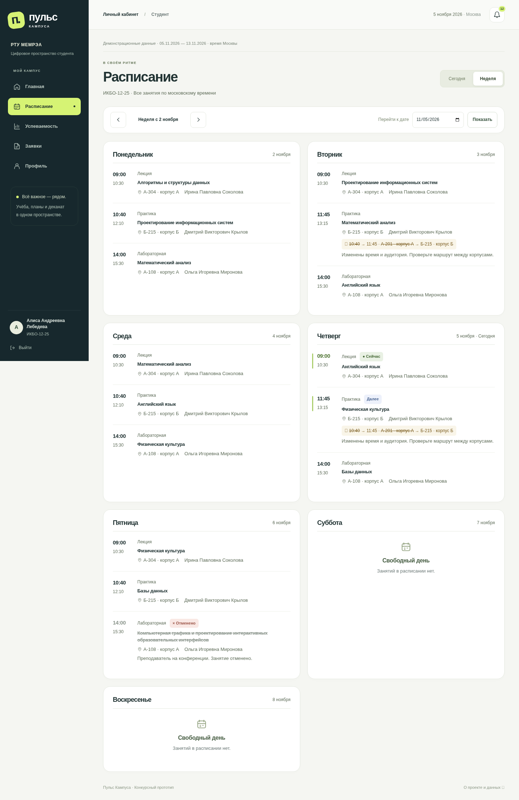
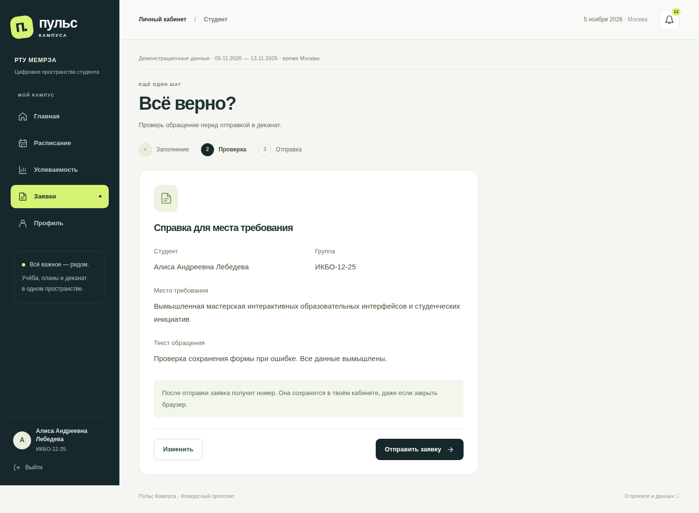
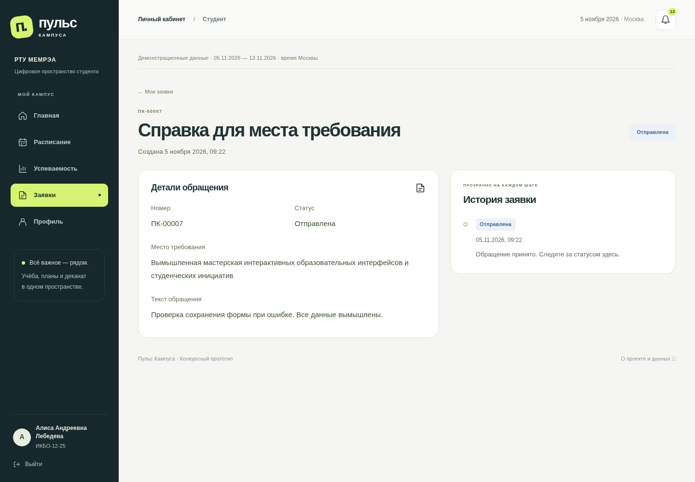
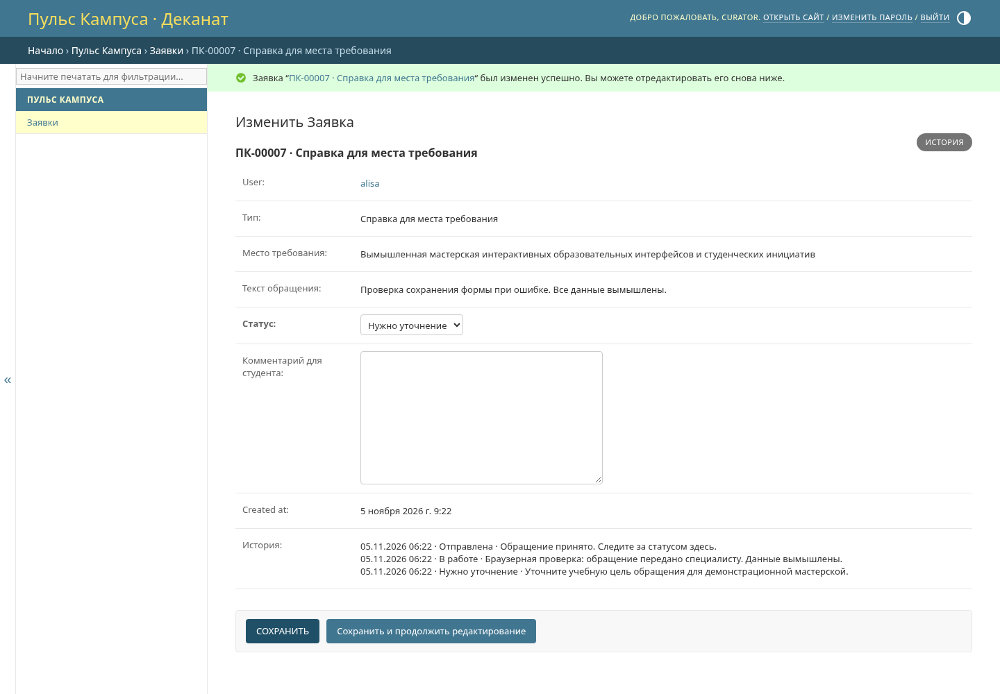
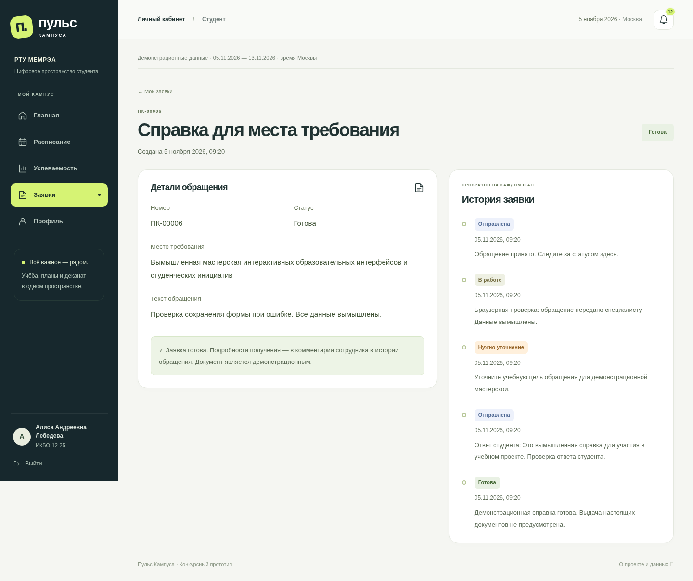
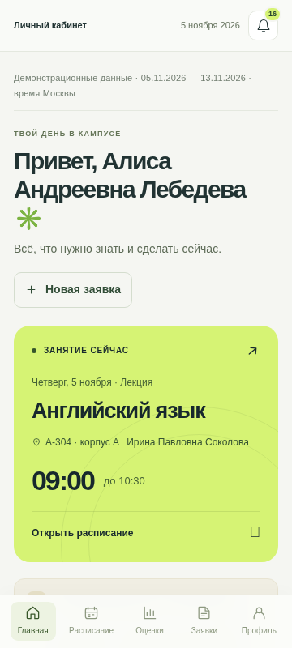
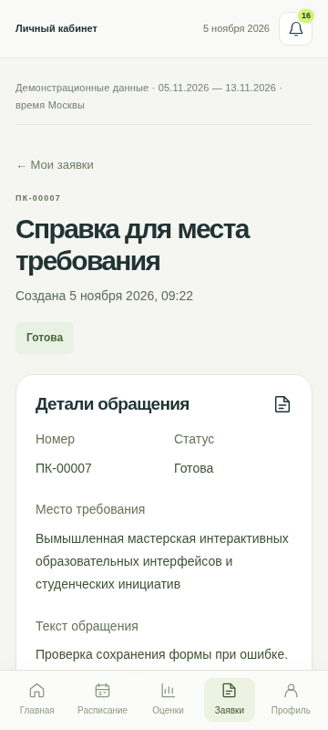

Конкурсный прототип. Не является официальным сервисом вуза. Все данные вымышлены.
Этот документ — исходный отчёт для жюри с реальными результатами и скриншотами. HTML и PDF фактически сформированы и проверены: PDF содержит 15 страниц A4. scripts/export_report.py воспроизводит HTML/PDF из этой версии и проверяет загрузку всех изображений. Наличие исходного документа само по себе не означает успешный экспорт: проверяется фактически созданный PDF.
Гипотеза проекта: студенту нужен единый ответ на вопрос «Что мне нужно знать и сделать сейчас?». Главная объединяет ближайшее занятие, изменения, дедлайны и действия по заявкам. Расписание раскрывает время и место; успеваемость отделяет результат от долга; заявки дают прослеживаемое обращение; профиль объясняет, чьи данные показаны. Это проектная гипотеза, не результат интервью.
Вход → обзор дня → просмотр изменения расписания → создание обращения → проверка ввода → номер и история → уточнение сотрудника → ответ студента → готовность. Второй студент видит собственные записи. Прочтение персонального уведомления не меняет состояние другого пользователя. Выход закрывает доступ.
Codex и его параллельные агенты помогали с проектированием, кодом интерфейса, документацией, тестами и браузерной проверкой. Shell/Python/Git использовались для реального исполнения, pip/PyPI — для зависимостей. Django test runner запускал серверные проверки, Playwright управлял настоящим Chromium. Основной агент отвечает за интеграцию. Отдельная IDE, интервью и внешние вузовские сервисы не заявляются. Подробности и ключевые запросы — в ai-process.md.
Выбран Django-монолит: встроенные сессии, формы, CSRF и admin сокращают количество собственных механизмов безопасности. SQLite упрощает локальный запуск; production требует PostgreSQL. Алгоритмический план не зависит от генеративного API.
Первая Git-проверка упёрлась в доступ к proxy; разрешённое исполнение подтвердило рабочий доступ и действительно пустой репозиторий. Секрет GitHub не запрашивался. Пустой репозиторий стал основанием создать новый проект после нового задания. Для публичной публикации подготовлены файлы, но отсутствие хостинга и домена не скрывается.
Браузер отправляет формы на сервер Django. Сервер определяет пользователя по сессии и сам ограничивает выборку данными этого студента. Подмена ID не должна давать чужие записи. Пароль хранится как стандартный хеш; служебный статус меняется только сотрудником. Форма защищена от сторонней отправки, текст выводится с экранированием. Повторное подтверждение одной заявки не создаёт случайный дубликат.
В production запрос проходит через HTTPS/nginx к закрытому Gunicorn, данные хранятся в постоянной PostgreSQL. Подробнее — architecture.md и security.md.
5 ноября 2026 года основной агент выполнил 31 тест из 31 успешно на SQLite и тот же набор 31 из 31 на PostgreSQL 17 в реальном контейнере. Выполнены миграции пустых БД (включая 0002), seed_demo и Django system check. На SQLite выполнен collectstatic. Это результаты текущего экземпляра, а не доказательство публичного развёртывания.
В portal/tests.py проверены: правильный/неправильный вход, закрытые страницы и выход; безопасный login redirect; подмена ID, владельца, роли и статуса; три типа заявок, валидация с сохранением текста, повтор отправки и подписанный токен; независимое прочтение; CSRF и escaping; права сотрудника, комментарии и ответ на уточнение; расписание по группе, изменения, current/next; среднее только по оценкам; rate limit и его истечение; ограничения числовой оценки в БД; повтор seed без потери паролей, заявок и прочтения.
| Проверка | Результат |
| Миграции чистой БД | Проверено: SQLite и PostgreSQL 17, 0001 + 0002 |
| Django system check | Проверено: SQLite и PostgreSQL 17 |
Сборка статики collectstatic | Проверено на SQLite-окружении |
| Автоматизированные сценарии | Проверено: 31/31 на SQLite и 31/31 на PostgreSQL |
| Два студента в браузере | Проверено: разные имена/группы/результаты; чужая заявка HTTP 404 |
| Сотрудник и изменение статуса | Проверено: «В работе» → «Нужно уточнение», обязательный комментарий, ответ студента, «Готова» и пять записей истории |
| Телефон 360 px | Проверено: вход, пять разделов, уведомления и формы; горизонтального скролла нет, нижняя навигация работает |
| Данные после перезапуска | Проверено: реальный stop/start dev.sh, новый вход; ПК-00006 сохранила место требования, «Готова» и пять записей истории |
| Docker-сборка и Gunicorn | Проверено: чистая сборка Python 3.12.14-slim, непривилегированный контейнер, реальная PostgreSQL 17; успешный вход и главная |
| Production-настройки | Проверено: check --deploy без замечаний; Secure, HttpOnly, SameSite=Lax; HTTP 301 на HTTPS |
| Чистое окружение | Проверено: из чистого образа на отдельной пустой campus_clean миграции, seed дважды и check --deploy; Compose config --quiet |
| Публичный HTTPS и сеть России | Не проверено; нужен сервер владельца |
Контейнер PostgreSQL использовал официальный postgres:17-bookworm, digest sha256:839fbb5a4942a7758dd93e18b42ea5649807491a0545b5eeeb8f0b8bb11857a5. Он закреплён в Compose. Приложение собиралось из python:3.12.14-slim и запускалось через Gunicorn непривилегированным пользователем. Для pip в управляемой сети применён доверенный CA bundle через BuildKit secret; проверка TLS не отключалась.
Production-проверка выполнялась локально, с заголовком доверенного прокси X-Forwarded-Proto: https: это подтвердило поведение приложения и флаги cookies, но не настоящий публичный TLS, DNS или сертификат. Именно внешний HTTPS остаётся задачей развёртывания.
Окончательный браузерный запуск завершён 5 ноября 2026 в 09:22 МСК: Playwright + Chromium 155.0.8059.79 в управляемом Linux-окружении. Успешны все 13 групп сценариев: перезапуск и сохранность, неверный/правильный вход, клавиатурный фокус, оба студента, недельное расписание и пустой день, состояния успеваемости, валидация с сохранением текста, проверка/редактирование/отправка/повторное открытие заявки, полный цикл сотрудника, уведомления, девять мобильных экранов, чужой URL и выход. JavaScript-ошибок страницы и неудачных запросов ресурсов в завершённом запуске нет. Ожидаемые 422 при валидации и 404 при чужом ID проверены отдельно. Подробности — в браузерном протоколе.
Первый браузерный прогон остановился на неточном тестовом селекторе: он искал слово «Было», хотя интерфейс показывал старое значение зачёркнутым и стрелку. Селектор исправлен под реальный экран, затем весь сценарий пройден заново. Отдельно при серверных тестах исправлен расчёт следующего занятия при текущем и заменён неправильный способ проверки cookie после force_login на настоящий HTTP-вход. Ошибки доказательств не скрыты и не выдаются за дефекты продукта.
Все изображения ниже — настоящие снимки работающего приложения на этапе завершённого ядра. Они не реконструируют более раннюю историю разработки. Данные вымышлены; секреты не показаны. Мобильные изображения сняты браузером при viewport 360 px, а не на физическом телефоне.










Пользователь выбрал репозиторий, запросил настройку окружения и передал ТЗ. Другие ручные действия в сессии не подтверждены. Раздел manual-work.md отделяет сделанное от будущих задач.
Нет реальной вузовской интеграции и официальных документов. Нужны публичное HTTPS-развёртывание, резервная копия с проверенным восстановлением, проверка из российской сети и официальных конкурсных сроков. Работа до 28 ноября указана только в задании. Конкурсная заявка не отправлялась. Список необходимых действий — в submission.md.
Дополнительно сохранены два настоящих снимка видимой области 360 × 800 px для читаемости мобильных иллюстраций в PDF. Полные мобильные страницы остаются в docs/screenshots/.